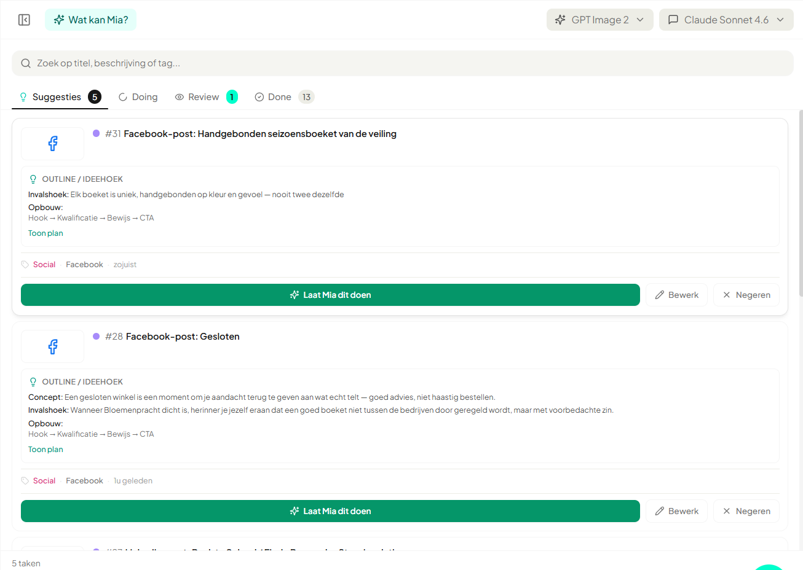
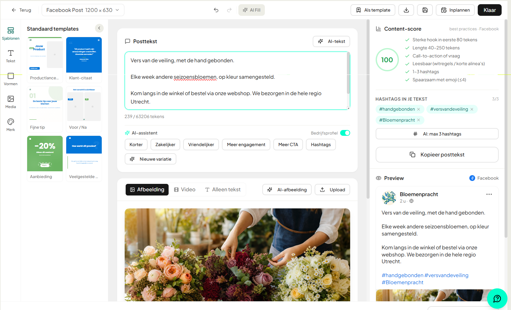
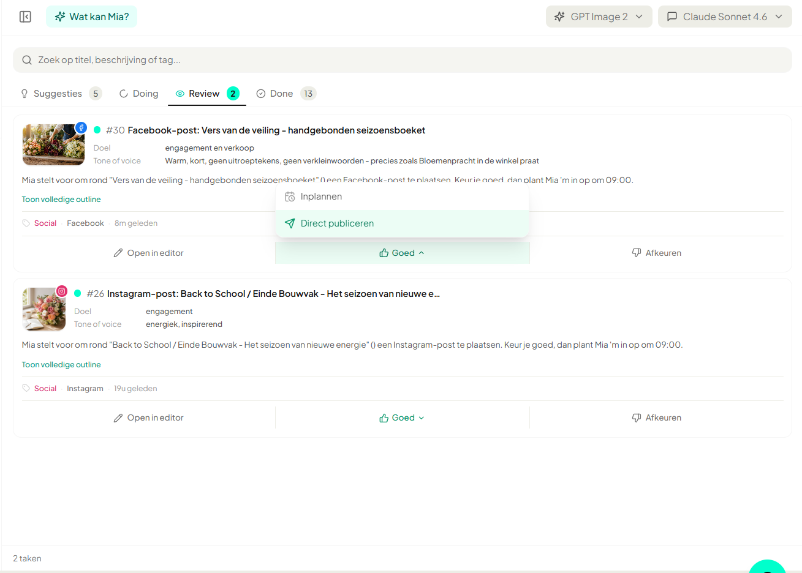
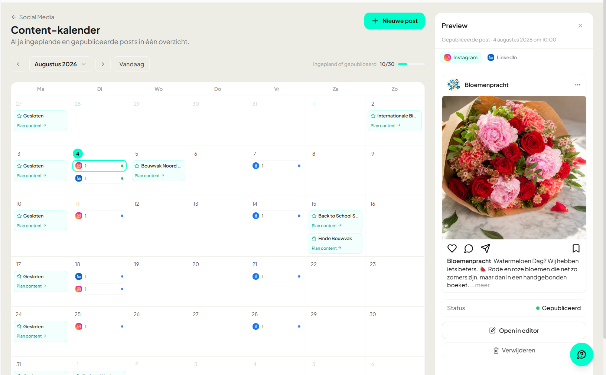

Organic: gevonden worden, zonder advertenties.
Mia zet je social posts klaar in jouw merkstijl, en laat zien hoe je gevonden wordt in Google en of ChatGPT je noemt. Ze schrijft de posts en pagina's die je verder helpen. Jij keurt goed.
SEO
Koppel Google Search Console en je ziet hoe je site ervoor staat, waar je klikken laat liggen en of ChatGPT je noemt. Bij elk cijfer staat wat het betekent en wat je nu doet.
1 Overzicht
Hoe staat je site ervoor?
Je ziet je SEO-score van 0 tot 100. Die bestaat uit drie onderdelen: techniek, snelheid en autoriteit. Bij elk onderdeel staat in één zin wat het betekent, en wat je nu doet.
Daaronder je cijfers uit Google in gewone taal: hoe vaak je in beeld kwam, hoeveel mensen klikten en op welke plek je staat. Je ziet of bezoekers je naam al kenden, en op welke zoekwoorden je bijna op de eerste pagina staat.
Merk of overig
Overig: zochten op wat je doet81%
Merk: zochten op je naam19%
8 van de 10 bezoekers kenden je naam nog niet.
Bijna op de eerste pagina
2 Content
Pagina's die je hoger brengen.
Kies een zoekwoord en je ziet eerst of je kans maakt. HQ vergelijkt de sites die nu bovenaan staan met de jouwe. Is je kans klein, dan stelt Mia een beter zoekwoord voor.
Daarna schrijft Mia de hele pagina, in de toon uit je bedrijfsprofiel. Terwijl jij aanpast, loopt de score mee. Klaar? Zet de pagina met één klik op je WordPress-site, of kopieer de tekst als HTML voor een andere website. Niets gaat zonder jouw akkoord online.
Kans om bovenaan te komen: klein · 2.400 keer per maand gezocht
Bovenaan staan grote landelijke webwinkels. Met een zoekwoord uit je eigen stad maak je meer kans.
Bloemen bezorgen in Utrecht: vandaag besteld, vandaag in huis
Past bij de zoekvraag15/15
Vertrouwen14/20
3 Techniek
Kan Google je site goed lezen?
Is je site snel, en kunnen Google en AI-assistenten zoals ChatGPT hem lezen? HQ doet vier controles en geeft je één techniekscore van 0 tot 100.
Elke controle krijgt een oordeel, "In orde" of "Kan beter", met één advies in gewone taal. Wil je weten wat er precies gemeten is, dan klap je het open. Iets aangepast? Laat je site opnieuw controleren.
Je site is redelijk snel op een telefoon (62 van 100), maar het kan beter.
Wat je kunt doen: Maak de grootste foto bovenaan je homepage kleiner en lichter. Dat is meestal de snelste winst.
⌄ Bekijk wat we gemeten hebbenGoogle kan je site lezen en mag hem tonen.
⌄ Bekijk wat we gemeten hebbenAI-assistenten mogen je site lezen en vinden er direct leesbare tekst.
⌄ Bekijk wat we gemeten hebben4 Autoriteit
Andere sites die over je schrijven.
Hoe meer goede sites naar je linken, hoe meer Google je vertrouwt. ChatGPT en andere AI-assistenten halen hun antwoorden ook van zulke sites. Mia zoekt bestaande artikelen op sites die bij je bedrijf passen, en laat per site zien waarom: wie er lezen en hoeveel.
Kies je een artikel, dan komt daar een link naar jouw site in te staan. Wij regelen de plaatsing. Je betaalt de prijs die erbij staat, en je bestelt alleen wat je zelf kiest.
Mia's voorstellen
autoriteit 68 van 100
autoriteit 61 van 100
autoriteit 57 van 100
5 AI-zichtbaarheid
Noemt ChatGPT je bedrijf?
HQ stelt de vragen die je klanten stellen aan ChatGPT en Claude, en kijkt of jouw bedrijf in het antwoord staat. Je ziet wie er wel genoemd wordt, en van welke sites de antwoorden komen.
Word je nog niet genoemd? Dan is dat je startpunt. Mia kiest je eerste stap: een pagina die de vraag beantwoordt, of een artikel op een site die de assistenten nu al gebruiken.
Eerste meting: je wordt nog niet genoemd
Dat is normaal bij een eerste meting. Dit is je startpunt. Gevraagd aan ChatGPT en Claude, met zoeken op internet.
"Welke bloemist in Utrecht bezorgt op zondag?" Op die vraag noemen de assistenten nu twee andere bloemisten. Met een pagina die het letterlijk beantwoordt, maak je kans.
Wie wordt er genoemd
Waar het antwoord vandaan komt
De vragen die we stelden
Zo begin je.
Voor social posts koppel je je socials. Voor SEO heb je een website nodig die in Google Search Console staat.
Koppel je socials en Search Console
Log in met je eigen accounts. Staat je site nog niet in Search Console, dan helpt de app je daarbij.
Bekijk je score en kansen
Binnen een paar minuten staan je score, je zoekwoorden en je kansen klaar. Daarna elke nacht bijgewerkt.
Laat Mia schrijven
Mia zet posts en pagina's klaar. Jij leest mee, keurt goed en Mia plant in of zet live.
Vragen over Organic.
Wat is Organic?
Organic betekent gevonden worden zonder te betalen voor advertenties: via social media en via Google. In HQ zit dat in één module, met social posts en SEO samen.
Wat kost Organic?
€66 per maand excl. btw, of €633,60 per jaar excl. btw (20% korting). Eerst 14 dagen gratis, zonder betaalgegevens, met 25 credits. Daarna krijg je elke maand 100 credits voor beelden, video's en artikelen.
Wat heb ik nodig?
Voor social posts koppel je je socials. Voor SEO een website die in Google Search Console staat; je koppelt die door in te loggen met je eigen Google-account. Heb je een WordPress-site, dan zet je pagina's met één klik live. Anders kopieer je de tekst als HTML en plak je die in je eigen website.
Wat zegt mijn SEO-score?
Een cijfer van 0 tot 100, opgebouwd uit drie onderdelen: techniek (kan Google je site goed lezen), snelheid (hoe snel laadt je site op een telefoon) en autoriteit (hoeveel andere sites naar je linken). Bij elk onderdeel zie je wat het betekent en wat je nu doet.
Wat kost wat in credits?
Een AI-afbeelding kost 1 credit, een AI-video 10 en een artikel van Mia 5, plus 1 voor de afbeelding erbij. De tekst van een social post kost niets. Ook de content planner, je SEO-score, de techniekcheck, autoriteit, publiceren naar WordPress en 2 metingen van AI-zichtbaarheid per maand zijn gratis. Mislukt het maken, dan krijg je je credits terug.
Zet Mia zelf iets online?
Nee. Mia zet posts en pagina's klaar. Jij leest mee, past aan waar je wilt en keurt goed. Niets gaat zonder jouw akkoord online.
Wat kost een link op een andere site?
Vanaf €66 excl. btw per artikel, de meeste tussen €200 en €500. Mia stelt passende Nederlandse sites voor en je ziet vooraf welke site het is. Je betaalt in de app, wij regelen de plaatsing. Dit staat los van je credits.
Word ik hiermee ook gevonden in ChatGPT?
Dat kun je in HQ zien. We stellen de vragen die je klanten stellen aan ChatGPT en Claude, en kijken of je genoemd wordt. Je ziet ook wie wel genoemd wordt en van welke sites de antwoorden komen.
Gevonden worden zonder advertenties.
Mia doet het werk.
Organic: social posts en SEO voor €66 per maand excl. btw. Eerst 14 dagen gratis, zonder betaalgegevens.
Social posts
Mia kijkt in je kalender en zet de posts klaar in jouw merkstijl. Jij keurt goed, en pas daarna plant Mia ze in of plaatst ze meteen.
Na jouw goedkeuring post Mia op al je kanalen
1 Mia stelt voor
Op basis van je kalender zet Mia posts klaar.
Feestdagen, acties of vaste momenten: Mia bedenkt waar een post bij past en zet het voorstel klaar bij je taken, met de invalshoek erbij. Jij hoeft niet te bedenken wat je moet plaatsen.

2 Jij controleert
Links de tekst, rechts een score.
Mia schrijft in jouw toon en let op bereik. Een contentscore laat zien of de post sterk genoeg is, met punten als een goede hook, de juiste lengte en passende hashtags. Naast stilstaand beeld kan ze van je eigen foto’s ook een korte video maken. Maak je je ontwerpen liever in Canva? Via de koppeling haal je ze met één klik in je post. Wil je iets anders, dan pas je het aan met een klik.

3 Jij keurt goed
Eén klik op Goed. Meer hoef je niet te doen.
Klopt het? Dan kies je of Mia ’m inplant of meteen publiceert. Niet goed? Eén klik op Afkeuren en Mia komt met een nieuw voorstel. Niets gaat online zonder jouw akkoord.

4 Mia plant in
Op het juiste moment, of meteen.
Laat Mia een slim moment kiezen, of pak zelf de datum en tijd. In de kalender zie je in één oogopslag wat er staat en waar nog een gat zit. Daarna hoef je er niet meer naar om te kijken.

De schermen hierboven komen uit HQ zelf. Klik erop om ze groot te bekijken. In dit voorbeeld zie je bloemenzaak Bloemenpracht, een verzonnen bedrijf.